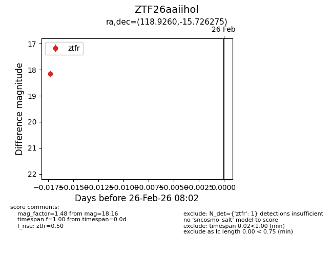
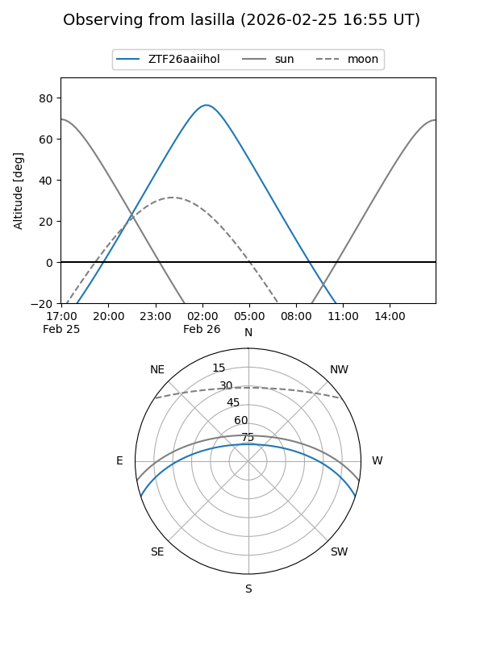
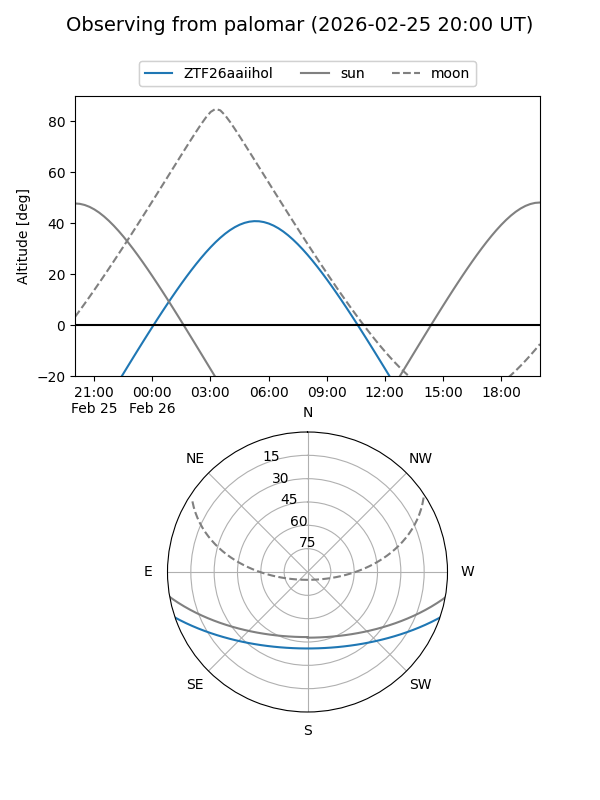

ZTF26aaiihol
Target ZTF26aaiihol at 2026-02-26 08:03
Aliases and brokers:
FINK: link
Lasair: link
ALeRCE: link
alt names
ZTF26aaiihol (ztf,fink_ztf)
Coordinates:
equatorial (ra, dec) = 118.9260,-15.72627
equatorial (HMS+DMS) = 07:55:42.23,-15:43:34.59
galactic (l, b) = (234.3428,+6.51689)
Flags:
Photometry:
last ztfr=18.16
1 ztfr detections
Lightcurve

Visibility


Additional plots